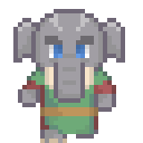
O Povo-Elefante vive em Koba, em unidades familiares nômades na floresta, elas são compostas de uma matriarca mais velha e outras fêmeas e filhotes, são unidades pequenas, com 15 a 20 indivíduos, as fêmeas são as lideres dessas unidades e os machos, ao atingirem a idade adulta, passam a viver sozinhos, em geral como xamãs.
Ambos os sexos têm muito orgulho de suas presas, raramente as usando em combate, mesmo que sejam muito eficientes como armas.
- Seu tipo é Monstrous Humanoid, uma vez que todos os povos fera são resultados de experiências dos Aboleth, feitas milhares de anos no passado
- Como um membro do povo Elefante, seu tamanho é Large, ficando entre 2,5m até 2,7m de altura para as fêmeas e entre 2,8m até 3m de altura para os machos e um peso de até 450kg para as fêmeas e até 700kg para os machos
- STR +2, DEX -2, CON +2, WIS +2, CHA -2, o povo elefante é forte e resistente por conta do tamanho e são muito sábios, mas são introspectivos e tendem a não confiar muito em estranhos.
- +2 Natural Armor, como suas contrapartes animais, o povo Elefante tem a pele grossa e resistente.
- Low Light Vision, ao contrário de outros Monstrous Humanoids, o povo Elefante não tem visão no escuro, mas enxergam duas vezes mais longe que os humanos em situações de luz fraca.
- +2 em testes de Perception, assim como sua contraparte animal, o povo Elefante tem os sentidos bem aguçados.
- Move: 6m,embora sejam lentos por conta do tamanho, são bem fortes e não são afetados por carga ou armaduras.
- Tusks: Como sua contraparte animal, o povo elefante possui longas presas, que podem ser usadas facilmente como armas, essas presas são um pouco menores nas fêmeas do que nos machos. em abos os casos, são armas naturais primárias que causam 1d6 de dano.
- Trunk: O povo elefante possui uma tromba característica de sua espécie, e eles a usam quase como um 5º membro. A tromba, embora tenha a destreza manual de um braço, não pode ser usada para empunhar armas.
- Languages: Você começa o jogo falando Comum e Fera, membros com altos valores de inteligência podem aprender: Aklo, Celestial, Elfico, Gnomo, Goblin, e Silvestre.
Variação do Povo Elefante
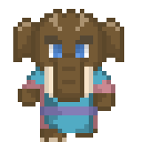
- O Povo Mamute
- Todas as estatísticas são iguais, mas o povo mamute não recebe o bônus de +2 em WIS, eles recebem um total de +4 em STR
- Adicionalmente, eles recebem os benefícios de Endure Elements para climas frios e uma penalidade de -2 para resistir aos efeitos do clima quente
O comportamento do Povo-manute é muito semelhante ao do povo Elefante, mas seu habitat é diferente, podem ser encontrados nas Tundras geladas de Ymirgardr no pólo norte.
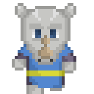
O Povo Rinoceronte Grandes, lentos e muito fortes, o povo rinoceronte é solitário, em geral vivendo sozinhos em cabanas nas florestas de Koba, são guerreiros orgulhosos e, diferentemente da maior parte dos povos-fera, ostentam seus chifres com orgulho e os usam em combate sempre que podem.
- Seu tipo é Monstruous Humanoid, uma vez que todos os povos fera são resultados de experiências dos Aboleth, feitas milhares de anos no passado
- Como um membro do povo Rinoceronte, seu tamanho é Large, ficando entre 2,4m até 2,6m de altura para as fêmeas e entre 2,7m até 2,9m de altura para os machos e um peso de até 350kg para as fêmeas e até 600kg para os machos
- STR +4, DEX -2, CON +2, INT -2, o povo Rinoceronte é extremamente forte e muito resistente, mas não são muito ágeis ou sofisticados.
- +3 Natural Armor, como sua contraparte animal, o povo Rinoceronte possui uma pele muito grossa e resistente.
- Low Light Vision, ao contrário de outros Monstrous Humanoids, não tem visão no escuro, mas enxergam duas vezes mais longe que os humanos em situações de luz fraca.
- +2 Perception checks related to smell and listen and -2 to sight related perception checks, como seus parentes animais, o povo Rinoceronte não enxerga bem, mas tem um sentido de olfato e audição aguçados.
- Move: 6m, embora sejam lentos por conta do tamanho, são bem fortes e não são afetados por carga ou armaduras.
- Gore:primary natural weapon, 1d8 piercing, como sua contraparte animal, o povo Rinoceronte possui um longo e afiado chifre que eles usam em combate com frequência, pode ser usado em investida como uma lança.
- Languages: Você começa o jogo falando Comum e Fera, membros com altos valores de inteligência podem aprender: Aklo, Celestial, Elfico, Gnomo, Goblin, e Silvestre.
Variação do Povo Rinoceronte

- O Povo Hipopótamo
- O valores de habilidade são os mesmos, mas eles perdem o ataque de Gore, em seu lugar, eles recebem um deslocamento de natação de 6m e um ataque de mordida de 1d6 como arma primária.
O comportamento do Povo-Hipopótamo é um pouco diferente, eles não são solitários, mas vivem em vilarejos próximos a cursos d 'água, entretanto, eles são tão agressivos ou até mais que seus parentes rinocerontes.
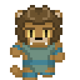
O Povo-Leão Lordes das savanas de Koba, o povo leão é orgulhoso e são caçadores e guerreiros habilidosos, os macho são guerreiros poderosos e dedicados na proteção de seus clãs, mas a caça é o domínio das fêmeas.
- Seu tipo é Monstrous Humanoid, uma vez que todos os povos fera são resultados de experiências dos Aboleth, feitas milhares de anos no passado
- Como um membro do povo Leão, seu tamanho é Medium, ficando entre 1,6 até 2m de altura para as fêmeas e entre 1,8m até 2,3m de altura para os machos e um peso de até 100kg para as fêmeas e até 150kg para os machos
- STR +2, CHA +2, INT -2 para os machos e DEX +2, CON +2, para as fêmeas
- +2 em testes de Perception, assim como sua contraparte animal, o povo leão tem os sentidos bem aguçados. Além disso, os Machos recebem +2 em Intimidate e as Fêmeas +2 em Survival.
- Move: 9m
- Fang & Claws: O povo leão tem dois ataques de garras e um ataque de mordida, ambos causam 1d4 de dano e são armas primárias, ou secundárias se usadas em conjunto com armas normais.
- Languages: Você começa o jogo falando Comum e Fera, membros com altos valores de inteligência podem aprender: Aklo, Celestial, Elfico, Gnomo, Goblin, e Silvestre.
- O Povo Tigre
- Tanto Machos como fêmeas recebem os seguintes bônus de habilidade e perícias: STR +2, CHA +2, Survival +2, Stealth +2, eles substituem os do Povo Leão
O comportamento do Povo-Tigre difere do Povo Leão, pois tendem a ser caçadores solitários, eles vivem nas florestas do Shogunato
Variação do Povo Leão
O comportamento do Povo Dentes de Sabre difere do Povo Leão, pois tendem a ser caçadores solitários, eles vivem nas florestas de Ymirgardr
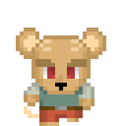
O Povo-Camundongo Vivem nas florestas de Aetheomir em vilarejos aos pés das árvores, seus pequenos vilarejos se assemelham aos dos humanos, mas são reclusos em suas vilas e evitam contato com os de fora a todo o custo.
- Seu tipo é Monstrous Humanoid, uma vez que todos os povos fera são resultados de experiências dos Aboleth, feitas milhares de anos no passado
- Como um membro do povo Camundongo, seu tamanho é Tiny, ficando entre 50cm até 70cm de altura e pesando entre 5kg e 10kg para ambos os sexos
- STR -4, DEX +4, CHA +2, o povo Camundongo é ágil e amigável, mas não são fisicamente fortes por conta do seu tamanho.
- Low Light Vision, ao contrário de outros Monstrous Humanoids, não tem visão no escuro, mas enxergam duas vezes mais longe que os humanos em situações de luz fraca.
- +2 em testes de Perception, Acrobatics, Stealth e Survival.
- Move: 6m, Escalada 6m.
- Languages: Você começa o jogo falando Comum e Fera, membros com altos valores de inteligência podem aprender: Aklo, Celestial, Elfico, Gnomo, Goblin, e Silvestre.
RougarouSeus bandos de caça vivem vagando pelas florestas de Aetheomir, procuram por grandes presas, mas não caçam humanóides sem um bom motivo
- Use o Rougarou, exceto pelo tipo, que passa a ser Monstrous Humanoid e os idiomas adicionais, que são os seguintes:
- Languages: Você começa o jogo falando Comum e Fera, membros com altos valores de inteligência podem aprender: Aklo, Celestial, Elfico, Gnomo, Goblin, e Silvestre.
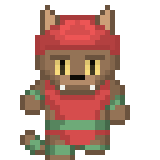
O Povo-Gato
- Para todos os efeitos, a mesma coisa do Catfolk, exceto pelos idiomas
- Languages: Você começa o jogo falando Comum e Fera, membros com altos valores de inteligência podem aprender: Aklo, Celestial, Elfico, Gnomo, Goblin, e Silvestre.
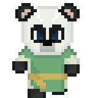
O Povo-Panda, tende a viver vidas solitárias ou em pequenos grupos nas montanhas do shogunato
- Seu tipo é Monstrous Humanoid, uma vez que todos os povos fera são resultados de experiências dos Aboleth, feitas milhares de anos no passado
- Tamanho: são criaturas Médias e, portanto, não recebem bônus ou penalidades devido ao tamanho.
- STR +2, WIS -2, CHA -2, são fortes, tanto em espírito quanto em corpo, mas tendem a ser reclusos.
- +2 em testes de Perception, assim como sua contraparte animal, o povo Elefante tem os sentidos bem aguçados.
- Move: 6m,embora sejam lentos por conta do tamanho, são bem fortes e não são afetados por carga ou armaduras.
- Atleta Natural: são fortes, tanto em espírito quanto em corpo, mas tendem a serem reclusos.
- Low Light Vision, ao contrário de outros Monstrous Humanoids, não tem visão no escuro, mas enxergam duas vezes mais longe que os humanos em situações de luz fraca.
- Languages: Você começa o jogo falando Comum e Fera, membros com altos valores de inteligência podem aprender: Aklo, Celestial, Elfico, Gnomo, Goblin, e Silvestre.
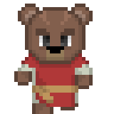
Os Bjornin Pardos são solitários, vivendo sozinhos em cabanas na floresta, onde caçam e colhem frutas, preferem evitar o combate, mas seu grande tamanho e força faz com que eles se tornem oponentes formidáveis
- Seu tipo é Monstrous Humanoid, uma vez que todos os povos fera são resultados de experiências dos Aboleth, feitas milhares de anos no passado
- Como um Bjornin Pardo, seu tamanho é Large, ficando entre 2,5m até 2,7m de altura e um peso de até 450kg para ambos os sexos
- STR +4, DEX -2, CON +2, São grandes e corpulentos, porem lentos.
- Forma Sólida: Recebem um bônus racial de +2 para se testes de resistências contra magia ou efeitos de polimorfismo, contra doenças e contra venenos ingeridos ou inalados (mas não contra doenças ou venenos mágicos).
- Low Light Vision, ao contrário de outros Monstrous Humanoids, não tem visão no escuro, mas enxergam duas vezes mais longe que os humanos em situações de luz fraca.
- Robusto: Ganham +2 de bônus racial em DMC contra tentativas de atropelamento, derrubar ou agarrar feitas contra eles enquanto estiverem em solo.
- Move: 9m.
- Ódio: Recebem um bônus racial +1 nas jogadas de ataque contra aberrações e contra criaturas humanoides do subtipo gigante, devido a treinamento especial contra esses inimigos.
- Ataques Naturais: Ganha um ataque corpo a corpo de mordida e dois ataques de garras sendo ambos são ataques naturais. O ataque de mordida causa 1d6 de dano e cada ataque de garra causa 1d6 de dano. Estes são ataques primários ou secundários se estiver segurando qualquer outra arma.
- Faro: Ursos pardos possuem um olfato aguçado
- Languages: Você começa o jogo falando Comum e Fera, membros com altos valores de inteligência podem aprender: Aklo, Celestial, Elfico, Gnomo, Goblin, e Silvestre.
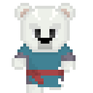
Os Bjornin Polares são solitários, vivendo sozinhos como nômades nos litorais frios do polo norte, onde caçam e pescam, preferem evitar o combate, mas seu grande tamanho e força faz com que eles se tornem oponentes formidáveis
- Seu tipo é Monstrous Humanoid, uma vez que todos os povos fera são resultados de experiências dos Aboleth, feitas milhares de anos no passado
- Como um Bjornin Polar, seu tamanho é Large, ficando entre 2,5m até 2,7m de altura e um peso de até 450kg para ambos os sexos.
- STR +4, DEX -2, CON +2, São grandes e corpulentos, porém lentos.
- Forma Sólida: Recebem um bônus racial de +2 para se testes de resistências contra magia ou efeitos de polimorfismo, contra doenças e contra venenos ingeridos ou inalados (mas não contra doenças ou venenos mágicos).
- Low Light Vision, ao contrário de outros Monstrous Humanoids, não tem visão no escuro, mas enxergam duas vezes mais longe que os humanos em situações de luz fraca.
- Robusto: Ganham +2 de bônus racial em DMC contra tentativas de atropelamento, derrubar ou agarrar feitas contra eles enquanto estiverem em solo.
- Resistência ao frio: eles recebem os benefícios de Endure Elements para climas frios e uma penalidade de -2 para resistir aos efeitos do clima quente
- Move: 9m, natação de 6m.
- Ódio: Recebem um bônus racial +1 nas jogadas de ataque contra aberrações e contra criaturas humanoides do subtipo gigante, devido a treinamento especial contra esses inimigos.
- Ataques Naturais: Ganha um ataque corpo a corpo de mordida e dois ataques de garras sendo ambos são ataques naturais. O ataque de mordida causa 1d6 de dano e cada ataque de garra causa 1d6 de dano. Estes são ataques primários ou secundários se estiver segurando qualquer outra arma.
- Faro: Ursos polares possuem um olfato aguçado.
- Languages: Você começa o jogo falando Comum e Fera, membros com altos valores de inteligência podem aprender: Aklo, Celestial, Elfico, Gnomo, Goblin, e Silvestre.
- é para todos os efeitos, a mesma coisa do Tengu, exceto pelos idiomas
- Languages: Você começa o jogo falando Comum e Fera, membros com altos valores de inteligência podem aprender: Aklo, Celestial, Elfico, Gnomo, Goblin, e Silvestre.
Tengu
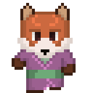
Kitsune
- é para todos os efeitos, a mesma coisa do Kitsune, exceto pelos idiomas
- Languages: Você começa o jogo falando Comum e Fera, membros com altos valores de inteligência podem aprender: Aklo, Celestial, Elfico, Gnomo, Goblin, e Silvestre.
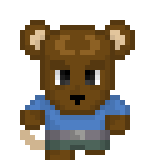
O Povo-rato
- é para todos os efeitos, a mesma coisa do Ratfolk, exceto pelos idiomas
- Languages: Você começa o jogo falando Comum e Fera, membros com altos valores de inteligência podem aprender: Aklo, Celestial, Elfico, Gnomo, Goblin, e Silvestre.
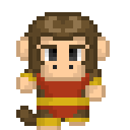
Vanara
- é para todos os efeitos, a mesma coisa do Vanara, exceto pelos idiomas
- Languages: Você começa o jogo falando Comum e Fera, membros com altos valores de inteligência podem aprender: Aklo, Celestial, Elfico, Gnomo, Goblin, e Silvestre.
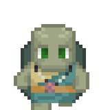
Os Honu, ou povo tartaruga, vive nos arquipélagos ao norte do shogunato, são pacíficos, vivem em pequenas aldeias costeiras e vivem de pesca, consideram águas-vivas uma iguaria
- Seu tipo é Monstrous Humanoid, uma vez que todos os povos fera são resultados de experiencias dos Aboleth, feitas milhares de anos no passado
- Tamanho: são criaturas Médias e, portanto, não recebem bônus ou penalidades devido ao tamanho, medem entre 1,6m e 2,1m e podem pesar até 300kg.
- DEX -2, CON +2, WIS +2, o povo Honu é resistente.
- Move: 6m, e não são afetados por carga ou armaduras. Natação 9m
- Low Light Vision, ao contrário de outros Monstrous Humanoids, não tem visão no escuro, mas enxergam duas vezes mais longe que os humanos em situações de luz fraca.
- Hard Shell: A Carapaça de um Honu dá os seguintes benefícios: +6 de bônus de Armadura na CA, +3 de bônus máximo de Destreza na CA, -4 de penalidade de armadura (como um peitoral de aço)
- RM: Sua Carapaça provém uma resistência à magia igual a 11+nível de personagem
- Runas de Casco: Um personagem com o Talento Craft Magical Tattoo, pode encantar o casco de um Honu como se fosse uma armadura.
- Languages: Você começa o jogo falando Comum e Fera, membros com altos valores de inteligência podem aprender: Aklo, Celestial, Elfico, Gnomo, Goblin, e Silvestre.
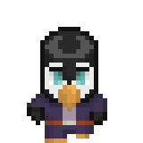
Os Chryss, ou povo pinguim, é uma espécie nativa do litoral de Huntston, vivem em pequenas aldeias e nos portos de Huntston, são mercadores e vendedores de tudo que não estiver pregado ou em que eles possam colocar suas mãos, podem ser lentos em terra, mas são exímios nadadores, eles tendem a formar laços duradouros com seus parceiros.
- Seu tipo é Monstrous Humanoid, uma vez que todos os povos fera são resultados de experiências dos Aboleth, feitas milhares de anos no passado
- Seu Tamanho é Pequeno, medindo entre 80cm e 1,3m e pesando entre 15kg e 35kg
- STR -2, CON +2, CHA +2, seu tamanho não os torna muito fortes, mas são bem resistentes e amigáveis
- Low Light Vision, ao contrário de outros Monstrous Humanoids, não tem visão no escuro, mas enxergam duas vezes mais longe que os humanos em situações de luz fraca.
- +2 em testes de Appraise, Sense Motive, Diplomacy e Bluff.
- Move: 4,5m, Natação 12m
- Telepatia Limitada: uma vez por semana, pode escolher um par, e pode se comunicar telepaticamente com este par a uma distância de até 30m
- Bico: um ataque natural primário com o bico, causa 1d3 de dano
- Habilidades Similares à Magia: uma vez por dia cada, pode usar Detect Magic e Identify, nível de conjurador igual o nível de personagem, é baseado em CHA.
- Resistência ao frio: eles recebem os benefícios de Endure Elements para climas frios e uma penalidade de -2 para resistir aos efeitos do clima quente
- Languages: Você começa o jogo falando Comum e Fera, membros com altos valores de inteligência podem aprender: Aklo, Celestial, Elfico, Gnomo, Goblin, e Silvestre.
Os Tanuki, são um povo fera nativo das ilhas do Shogunato, relaxados e brincalhões, gostam de pregar peças e estão sempre com fome, como os Kitsune, são metamorfos e possuem duas formas, uma de Tanuki, ou cão-guaxinim (usa as mesmas estatisticas do Raccoon), e uma de humanóide, que lembra um halfling gorduxo.
- Seu tipo é Monstrous Humanoid, uma vez que todos os povos fera são resultados de experiências dos Aboleth, feitas milhares de anos no passado
- Seu Tamanho é Pequeno, medindo entre 80cm e 1,3m e pesando entre 35kg e 55kg
- STR -2, CON +2, CHA +2, seu tamanho não os torna muito fortes, mas são bem resistentes e amigáveis
- Low Light Vision, ao contrário de outros Monstrous Humanoids, não tem visão no escuro, mas enxergam duas vezes mais longe que os humanos em situações de luz fraca.
- +2 em testes de Bluff, Sense Motive, Diplomacy e Survival.
- Glutão: Um Tanuki recebe um bous de +4 para resistir a venenos que tenha sido ingeridos com a comida.
- Move: 9m
- Mudar de Forma: uma quantidade de vezes por dia igual a metade do nivel, pode trocar de uma forma para outra, funciona como Beast Form 2, para assumir a forma de um Raccoon.
- Languages: Você começa o jogo falando Comum e Fera, membros com altos valores de inteligência podem aprender: Aklo, Celestial, Elfico, Gnomo, Goblin, e Silvestre.